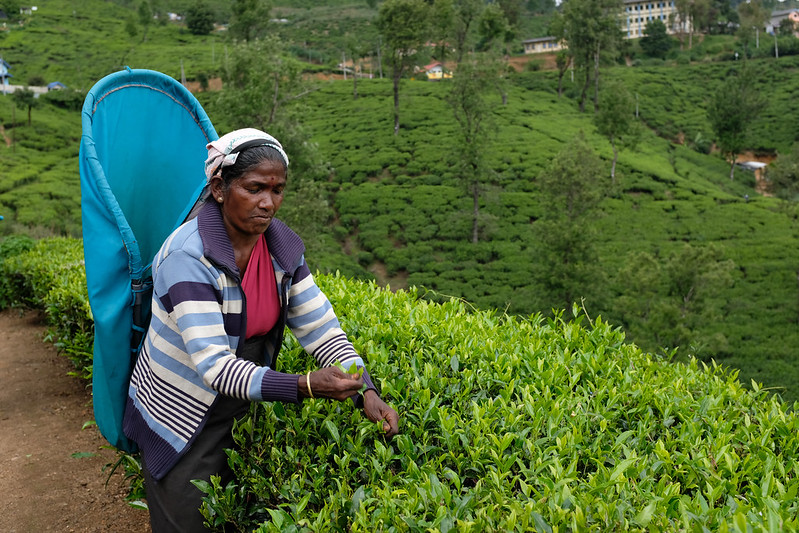

NUWARA ELIYA
The tourist industry in Sri Lanka refers to Nuwara Eliya as "Little England".
The History Of Nuwara Eliya
This chilly hill area of Sri Lanka was formerly a wilderness of forest and rainforest, nestled in the shadow of the 2524-meter-high peak Pidurutalagala, also known as Mount Pedro. In 1819, British colonial commander John Davy "found" the hill region and intended to create a sanatorium there.
Samuel Baker, an adventurer who also discovered Lake Albert in Uganda and investigated the Nile River, built Nuwara Eliya in 1846.
Nuwara Eliya, which translates to "City of Light," quickly became a popular cool-climate getaway for the British, as well as a "home away from home" where they could produce English vegetables and fruits like lettuce and strawberries. They began growing coffee here as well, but when the coffee plants succumbed to a disease, they turned to tea

Nuwara Eliya Today
With its red telephone booths, pink brick Victorian post office, well-kept golf course, horse racing circuit, colonial houses, and rose gardens, Nuwara Eliya retains its English country village atmosphere.
Water buffalos graze the hillsides, green tea plants grow everywhere, chaotic traffic clogs the streets, the fragrance of rice and curry fills the air, and lively marketplaces and little stores line the streets.

Things To Do In Nuwara Eliya
- High Tea at The Grand Hotel
- When: Every day 15:30 - 18:00
- Cost: 800 Sri Lankan Rupees = 5 USD (and you can drink as must tea as you can manage!)
- Victoria Park
- Opening hours: 07 - 18
- Cost: 300 Sri Lankan Rupees = 2 USD
- Gregory Lake
- Opening hours: 08 - 18
- Cost: 200 Sri Lankan Rupees = 1,5 USD
- Nuwara Eliya Town
- Tea Factory And Tea Plantation
- When: Every day 15:30 - 18:00
- Cost: 800 Sri Lankan Rupees = 5 USD (and you can drink as must tea as you can manage!)
The Grand Hotel's high tea is the greatest tea experience in Nuwara Eliya, if not all of Sri Lanka. Sipping tea and enjoying delectable cakes and sandwiches in the beautiful colonial Grand Hotel from 1891, in the heart of the tea city Nuwara Eliya, is a must-do!
The lovely Victoria Park can be found in the heart of Nuwara Eliya. It is well-kept and well worth an hour of walking about.
The concrete promenade that surrounds the lake is ideal for a leisurely stroll in the afternoon. You may also hire a swan-shaped paddle boat, a water scooter, a rowing boat, a motorboat, or take a pony ride if you grow weary of strolling.
Take a stroll through Nuwara Eliya's downtown to get a sense of the English town atmosphere. There are various colonial-style residences, such as the old pink post office, where you may mail postcards to friends and family.
A visit to a tea factory is a must! There are several tea companies in the area, obviously since we are in the middle of the tea capital of Sri Lanka
